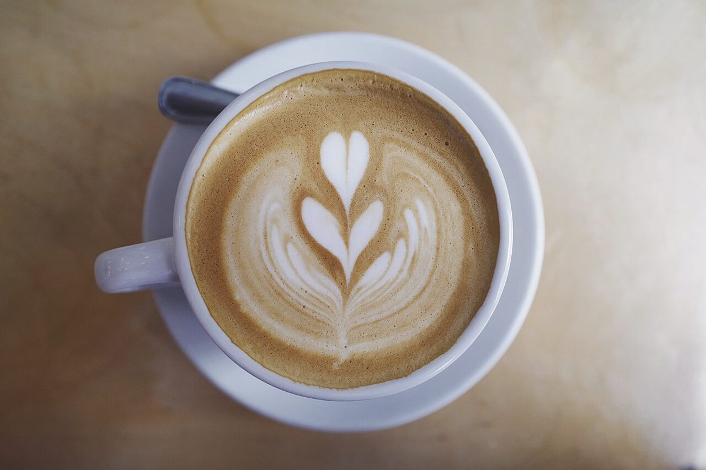

ボタン台紙 No.3
メニュー
メニューと価格は準備中です。確認でき次第、こちらに掲載します。
準備中メニュー
準備中価格
準備中ご予約
布を待つ空の型紙のように、中身はまだ入っていません。
雰囲気のイメージ
飲み物と焼き菓子の写真
下の写真は雰囲気を伝えるためのフリー素材で、お店で提供しているものではありません。提供メニューを示すものでもありません。



ボタン台紙 No.3
メニューと価格は準備中です。確認でき次第、こちらに掲載します。
布を待つ空の型紙のように、中身はまだ入っていません。
雰囲気のイメージ
下の写真は雰囲気を伝えるためのフリー素材で、お店で提供しているものではありません。提供メニューを示すものでもありません。
